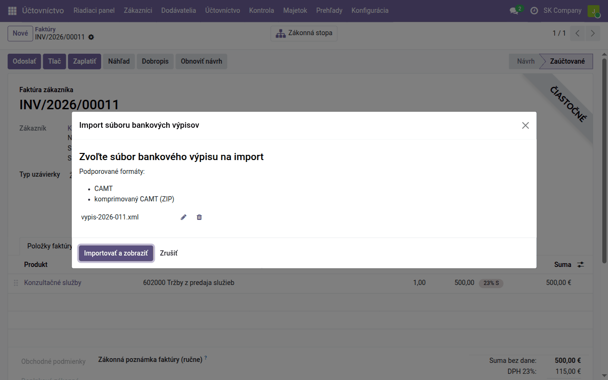
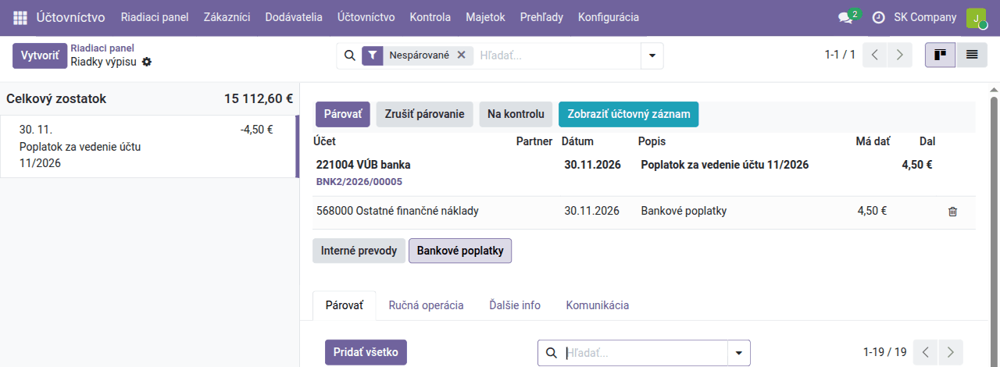

Návod k úlohe
Banka
Bankový účet v Odoo, import výpisu CAMT, párovanie podľa variabilného symbolu, bankové poplatky a platobné príkazy dodávateľom — čo sa pri tom zaúčtuje.
| Krajina | Slovensko |
|---|---|
| Edícia | Odoo Community |
| Zahŕňa | account, account_statement_import_base, account_statement_import_file, account_statement_import_camt, account_statement_import_camt_balance, account_reconcile_oca, account_reconcile_oca_counter_account, l10n_cssk_payment_symbols, l10n_cssk_payment_symbols_oca, account_payment_order, account_payment_mode, l10n_cssk_payment_symbols_payment_order, account_banking_sepa_credit_transfer, l10n_cssk_payment_symbols_sepa_oca, account_fio, account_statement_fio, account_tatrabanka (dodáva sa samostatne), account_statement_tatrabanka (dodáva sa samostatne) |
Na čo slúži tento návod
Bankový výpis je v Odoo zdrojom úhrad: faktúra je zaplatená, keď sa jej otvorená položka spáruje s riadkom výpisu. Návod ukazuje celý kolobeh — od založenia bankového účtu cez import výpisu a párovanie po platobný príkaz dodávateľom — a čo sa pri každom kroku zaúčtuje.
Pojmy a menu vysvetľuje návod Odoo pre slovenského účtovníka, účty bankového denníka návod Nastavenie predkontácií.
Bankový účet
Každý bankový účet je v Odoo bankový účtovný denník s vlastným analytickým účtom 221. Nový založíte v Účtovníctvo → Konfigurácia → Účtovníctvo → Účtovné denníky → Nový: Typ Banka, názov (napríklad VÚB banka) a na karte Pokročilé nastavenia Číslo účtu (IBAN). Odoo k nemu samo vytvorí účet 221 s názvom denníka (napríklad 221004 VÚB banka) a nastaví Prechodný účet 261000 Peniaze na ceste.
Na riadiacom paneli Účtovníctva má každý bankový denník vlastnú kartu so zostatkom, počtom nespárovaných riadkov a tlačidlami na import a párovanie.
Import výpisu
Slovenské banky (Tatra banka, Slovenská sporiteľňa, VÚB, ČSOB, 365.bank a ďalšie) dávajú výpis v internetbankingu na stiahnutie vo formáte CAMT.053 (XML). Stiahnite ho za obdobie, ktoré ešte nemáte v Odoo, a:
- na karte banky na riadiacom paneli kliknite na Import výpisu, alebo použite Účtovníctvo → Účtovníctvo → Importovať výpis;
- Nahrajte váš súbor a Importovať a zobraziť.
Odoo podľa IBAN vo výpise samo vyberie bankový denník, z výpisu prevezme počiatočný a konečný zostatok a vytvorí riadok za každý pohyb.
Ten istý výpis neimportujte dvakrát. Import výpisu CAMT duplicitu nerozpozná a vytvorí druhý výpis s tými istými pohybmi. Výpisy preto sťahujte za nadväzujúce obdobia a pred importom sa pozrite na Posledný výpis na karte banky; omylom importovaný výpis zmažte, kým jeho riadky nespárujete.

Ak tlačidlo na karte banky chýba (denník vznikol skôr, ako bol import nainštalovaný), vo formulári denníka nastavte pole Bankové pohyby na import súboru.
Pri importe sa z každého riadku prečítajú platobné symboly — VS, KS, ŠS —
z referencie (/VS202600010/SS/KS0308), popisu aj poznámky a variabilný
symbol sa zapíše na začiatok popisu riadku. Podľa čísla účtu protistrany sa
doplní partner, ak ho máte v Odoo s týmto účtom:
l10n_cssk_payment_symbols.
Ak import odmietne výpis, lebo „nesedí zostatok“, hoci je súbor správny
(niektoré banky dávajú denné medzizostatky alebo zostatok v inom tvare),
nainštalujte si z Aplikácií opravu
account_statement_import_camt_balance.
Iné cesty k výpisu:
- Fio banka — výpisy sa sťahujú samy cez API Fio:
account_statement_fio, z Aplikácií. - Tatra banka — pohyby sa sťahujú samy každú hodinu cez Premium API:
account_statement_tatrabanka(dodáva sa samostatne); zapína ho na požiadanie náš tím. - Ručne — Účtovníctvo → Účtovníctvo → Banka a pokladňa → Bankové výpisy → Nový.
Automatické párovanie
Už pri importe sa riadky výpisu spárujú s otvorenými faktúrami podľa variabilného symbolu:
- symbol nesie práve jedna otvorená faktúra → spáruje sa s ňou;
- nesie ho viac faktúr → vezme sa tá, ktorej otvorená suma sa rovná platbe, ak je taká práve jedna;
- ak je známy platiteľ (podľa čísla účtu), berú sa do úvahy len jeho doklady;
- úvodné nuly sa ignorujú (
0042=42).
Čiastočná úhrada sa spáruje a zvyšok faktúry ostane otvorený. Preplatok sa
automaticky nespáruje nikdy — ostane na vás. Modul nikdy nehádá: čo nie je
jednoznačné, nechá na ručné párovanie
(l10n_cssk_payment_symbols_oca).
Zaúčtovanie spárovaných riadkov:
| Riadok výpisu | Účet | MD | Dal |
|---|---|---|---|
| Úhrada od odberateľa 4 920 € | 221004 VÚB banka | 4 920 | |
| 311000 Odberatelia | 4 920 | ||
| Úhrada dodávateľovi 98,40 € | 321000 Dodávatelia | 98,40 | |
| 221004 VÚB banka | 98,40 |
Ručné párovanie
Čo sa nespárovalo samo, nájdete v Účtovníctvo → Účtovníctvo → Párovať alebo tlačidlom … na párovanie na karte banky. Vľavo sú nespárované riadky výpisu, vpravo navrhnuté zaúčtovanie a pod ním na karte Párovať otvorené položky odberateľov a dodávateľov.

- Úhrada faktúry: v zozname otvorených položiek kliknite na faktúru (vyhľadávanie podľa partnera, sumy alebo čísla), skontrolujte navrhnuté riadky a kliknite na Párovať.
- Bankový poplatok, úrok, prevod medzi vlastnými účtami: tlačidlá Bankové poplatky a Interné prevody nad kartami vyplnia protiúčet jedným kliknutím.
- Čokoľvek iné: karta Ručná operácia — účet, partner, popis a suma zadané ručne.
- Na kontrolu odloží riadok, ak si nie ste istí; Zrušiť párovanie vráti spárovaný riadok späť.
Pri platbe bez symbolu pomôže číslo účtu platiteľa, ktoré obrazovka párovania
ukazuje pri riadku výpisu
(account_reconcile_oca_counter_account).
Ak číslo účtu priradíte partnerovi, nabudúce ho Odoo spozná samo.
Tlačidlo Bankové poplatky posiela poplatok na účet nastavený v Účtovníctvo → Konfigurácia → Účtovníctvo → Modely párovania → Bankové poplatky. Odoo ho pri slovenskej osnove nastaví nesprávne na 501000 Spotreba materiálu; zmeňte ho na 568000 Ostatné finančné náklady. Rovnako si skontrolujte, že model Interné prevody ide na 261001 Prevod likvidity.
| Riadok výpisu | Účet | MD | Dal |
|---|---|---|---|
| Poplatok za vedenie účtu 4,50 € | 568000 Ostatné finančné náklady | 4,50 | |
| 221004 VÚB banka | 4,50 |
Kým riadok nespárujete, je zaúčtovaný proti 261000 Peniaze na ceste. Zostatok účtu 261000 je teda súčet nespárovaných pohybov — na konci mesiaca má byť nulový.
Platobný príkaz dodávateľom
Úhrady dodávateľských faktúr pripravíte v Odoo hromadne a do banky nahráte jeden súbor SEPA (pain.001):
- Raz nainštalujte z Aplikácií modul Account Banking SEPA Credit Transfer a v Účtovníctvo → Konfigurácia → Účtovníctvo → Spôsoby platby založte spôsob, napríklad SEPA prevod: Platobná metóda Úhrada SEPA dodávateľom, Prepojenie s bankovým účtom Pevná, Pevný bankový denník váš bankový denník.
- Účtovníctvo → Dodávatelia → Platobné príkazy → Nový, zvoľte Spôsob platby a Typ dátumu vykonania platby (Okamžite, Dátum splatnosti alebo Pevný dátum).
- Vytvoriť riadky platby z položiek účtovnej knihy → Pridať všetky položky účtovnej knihy (alebo len vybrané) → Vytvoriť transakcie. Na každý riadok sa prenesie IBAN dodávateľa, suma a VS, KS a ŠS faktúry.
- Potvrdiť platby a Vygenerovať platobný súbor. Súbor stiahnite a nahrajte do internetbankingu, kde príkaz autorizujete.
- Kliknite na Súbor bol úspešne nahraný. Faktúry prejdú do stavu V platbe.
Spolu s modulom SEPA úhrad sa nainštaluje aj
l10n_cssk_payment_symbols_sepa_oca,
ktorý do súboru zapíše VS, KS a ŠS každej faktúry v tvare /VS…/SS…/KS…,
ako ich čítajú slovenské banky; faktúry s rôznymi symbolmi uhradí
samostatnými prevodmi. Umiestnenie symbolov sa dá zmeniť na bankovom
denníku, voľba Platobné symboly CZ/SK v SEPA úhradách. Pred prvým
ostrým príkazom pošlite jednu skúšobnú platbu a pozrite sa, ako ju vidí
príjemca.
Zaúčtovanie. Pri potvrdení nahrania sa za každú platbu zaúčtuje:
| Doklad | Účet | MD | Dal |
|---|---|---|---|
| Platba (Súbor bol úspešne nahraný) | 321000 Dodávatelia | 98,40 | |
| 221003 Neuhradené platby | 98,40 | ||
| Riadok výpisu (spárovaný s platbou) | 221003 Neuhradené platby | 98,40 | |
| 221004 VÚB banka | 98,40 |
Keď platba príde na výpis, riadok výpisu sa sám nespáruje — faktúra je už uhradená platbou a čaká sa na jej spárovanie s bankou. V Párovať ho spárujte s položkou platby na účte 221003 (nájdete ju v zozname podľa dodávateľa alebo sumy). Zostatok účtu 221003 sú platby odoslané do banky, ktoré ešte nie sú spárované s výpisom.
Kontrola na konci mesiaca
- Konečný zostatok posledného výpisu v Odoo sa rovná zostatku vo výpise banky (karta banky na riadiacom paneli, Posledný výpis).
- 261000 Peniaze na ceste je nulový — nič nečaká na spárovanie.
- 221002 Neuhradené príjmy a 221003 Neuhradené platby obsahujú len platby, ktoré banka naozaj ešte nepripísala alebo neodpísala.
Účty si pozriete v Účtovníctvo → Prehľady → Účtovné výkazy OCA → Hlavná kniha alebo Predvaha za mesiac.